GPU 的工作
渲染管线
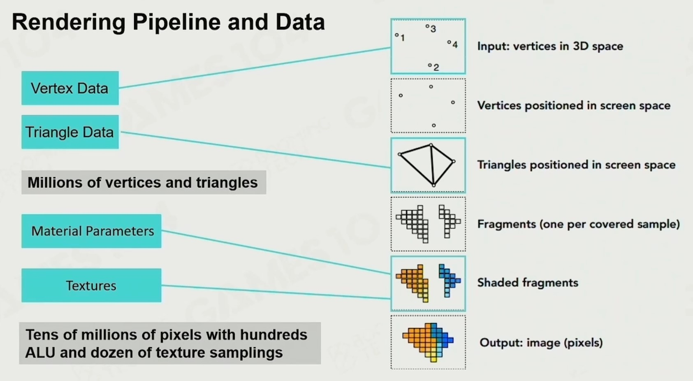
渲染流程
变换到相机的坐标系统中
这在 GAMES101 的课里都有讲。
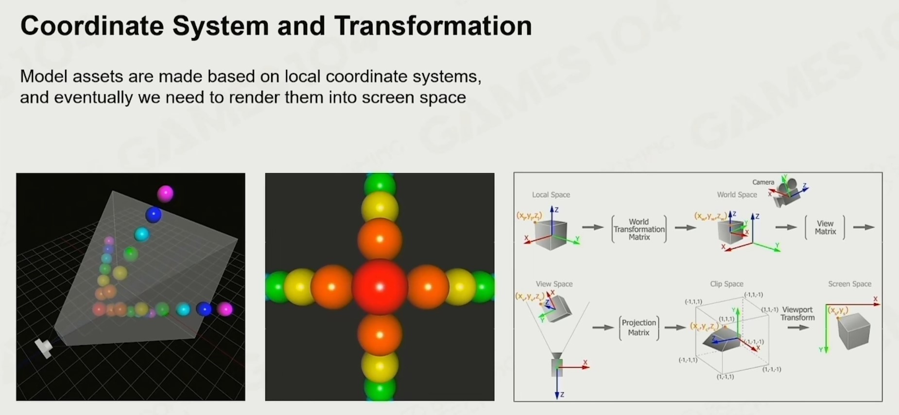
提交数据至 Shader
Shader 中的运算流程就是渲染管线（大概）。
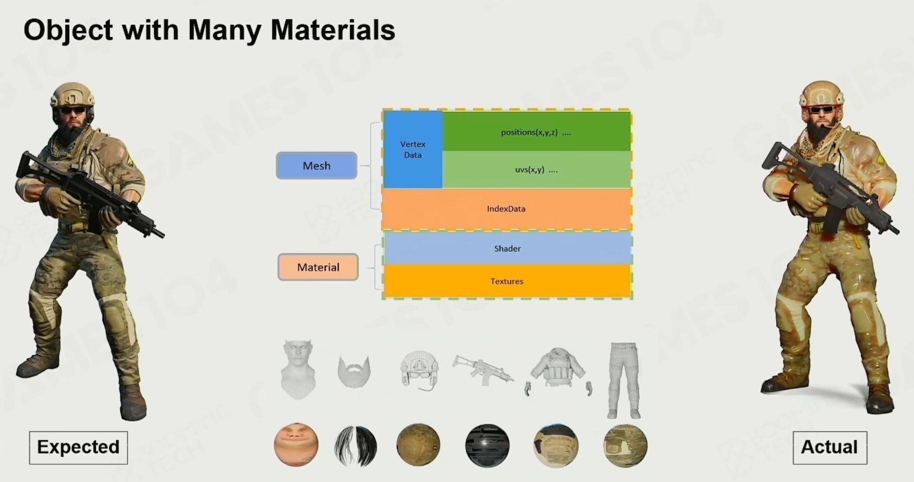
CPU 的工作
相比 GPU，CPU 主要是对抽象物体进行初始化以及管理。
抽象图形 API
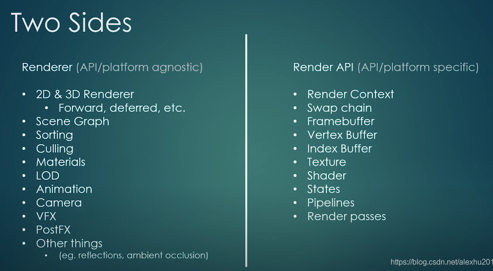
其中左边是平台不关心的（不知道的），右边是需要根据平台重写的 API。
其实通过之前的介绍，很容易发现左边是 CPU 的工作，右边是 GPU 的工作，毕竟不同的渲染平台本身就是给 CPU 提供了不同的 RHI。
Platform specific
GraphicsContext
渲染过程中需要用上下文来记录当前线程中与渲染相关的信息，方便在不同的线程中切换。
class GraphicsContext{
public:
virtual void Init() = 0;
virtual void SwapBuffer() = 0;
};
Shader
内部提供了初始化以及对 Shade 的绑定和解绑。
class Shader
{
public:
Shader(const std::string& vertexSrc, const std::string& fragmentSrc);
~Shader();
void Bind() const;
void Unbind() const;
private:
uint32_t m_RendererID;
};
在读取 Shader 文件时，将其存储在一个 map 中，方便之后对其的部分内容进行访问和修改。
class ShaderLibrary
{
public:
void Add(const std::string& name, const Ref<Shader>& shader);
void Add(const Ref<Shader>& shader);
Ref<Shader> Load(const std::string& filepath);
Ref<Shader> Load(const std::string& name, const std::string& filepath);
Ref<Shader> Get(const std::string& name);
bool Exists(const std::string& name) const;
private:
std::unordered_map<std::string, Ref<Shader>> m_Shaders;
};
VBO
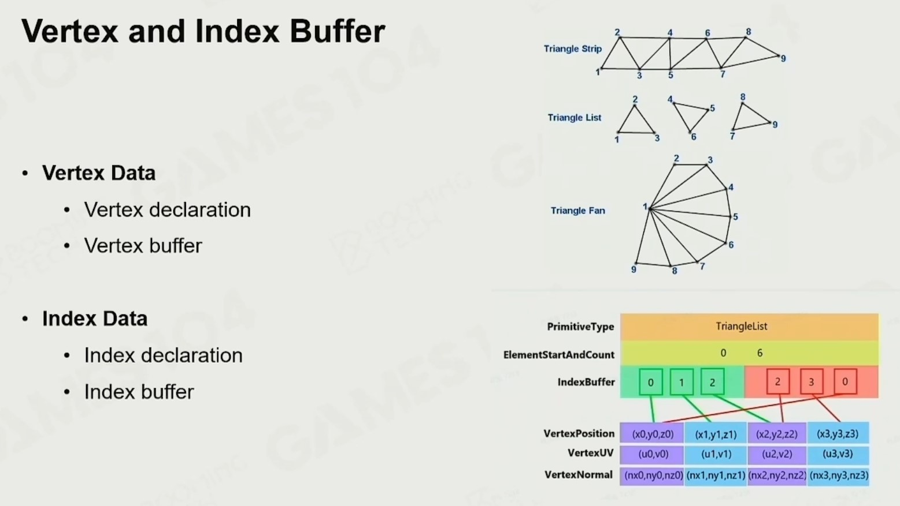
VBO 是一个存放顶点数组的缓冲区。
class VertexBuffer
{
public:
virtual ~VertexBuffer() {}
virtual void Bind() const = 0;
virtual void Unbind() const = 0;
static VertexBuffer* Create(float* vertices, uint32_t size);
};
从 VBO 中取数需要根据内部存储的数据类型，计算数据起始地址和数据长度。
BufferElement ：储存单位数据的长度等其他属性。
struct BufferElement
{
std::string Name;
ShaderDataType Type;
uint32_t Size;
uint32_t Offset;
bool Normalized;
BufferElement() {}
BufferElement(ShaderDataType type, const std::string& name, bool normalized = false)
: Name(name), Type(type), Size(ShaderDataTypeSize(type)), Offset(0), Normalized(normalized)
{
}
uint32_t GetComponentCount() const
{
switch (Type)
{
case ShaderDataType::Float: return 1;
case ShaderDataType::Float2: return 2;
case ShaderDataType::Float3: return 3;
case ShaderDataType::Float4: return 4;
case ShaderDataType::Mat3: return 3 * 3;
case ShaderDataType::Mat4: return 4 * 4;
case ShaderDataType::Int: return 1;
case ShaderDataType::Int2: return 2;
case ShaderDataType::Int3: return 3;
case ShaderDataType::Int4: return 4;
case ShaderDataType::Bool: return 1;
}
HZ_CORE_ASSERT(false, "Unknown ShaderDataType!");
return 0;
}
};
BufferLayout ：计算缓冲区中数据的布局。
class BufferLayout
{
public:
BufferLayout() {}
BufferLayout(const std::initializer_list<BufferElement>& elements)
: m_Elements(elements)
{
CalculateOffsetsAndStride();
}
inline uint32_t GetStride() const { return m_Stride; }
inline const std::vector<BufferElement>& GetElements() const { return m_Elements; }
std::vector<BufferElement>::iterator begin() { return m_Elements.begin(); }
std::vector<BufferElement>::iterator end() { return m_Elements.end(); }
std::vector<BufferElement>::const_iterator begin() const { return m_Elements.begin(); }
std::vector<BufferElement>::const_iterator end() const { return m_Elements.end(); }
private:
void CalculateOffsetsAndStride()
{
uint32_t offset = 0;
m_Stride = 0;
for (auto& element : m_Elements)
{
element.Offset = offset;
offset += element.Size;
m_Stride += element.Size;
}
}
private:
std::vector<BufferElement> m_Elements;
uint32_t m_Stride = 0;
};
VAO
VAO 是一个关于顶点属性的数组，按属性对应 VBO（告知 VBO 怎么取数据）。
class VertexArray
{
public:
virtual ~VertexArray() {}
virtual void Bind() const = 0;
virtual void Unbind() const = 0;
virtual void AddVertexBuffer(const std::shared_ptr<VertexBuffer>& vertexBuffer) = 0;
virtual void SetIndexBuffer(const std::shared_ptr<IndexBuffer>& indexBuffer) = 0;
virtual const std::vector<std::shared_ptr<VertexBuffer>>& GetVertexBuffers() const = 0;
virtual const std::shared_ptr<IndexBuffer>& GetIndexBuffer() const = 0;
static VertexArray* Create();
};
IBO
IBO 是一个存放图元顶点在顶点数组中的索引的缓冲区。
class IndexBuffer
{
public:
virtual ~IndexBuffer() {}
virtual void Bind() const = 0;
virtual void Unbind() const = 0;
virtual uint32_t GetCount() const = 0;
static IndexBuffer* Create(uint32_t* indices, uint32_t size);
};
Texture
Texture 的本质就是一个数据缓冲区，只需要把相应的数据存储在相应的位置，便可将值传给相应的顶点。
class Texture
{
public:
virtual ~Texture() = default;
virtual uint32_t GetWidth() const = 0;
virtual uint32_t GetHeight() const = 0;
virtual void Bind(uint32_t slot = 0) const = 0;
};
Framebuffer
其本质是一块 buffer 区，用于存储某一帧所有的 buffer 数据。
class Framebuffer
{
public:
virtual void Bind() = 0;
virtual void Unbind() = 0;
virtual uint32_t GetColorAttachmentRendererID() const = 0;
virtual const FramebufferSpecification& GetSpecification() const = 0;
static Ref<Framebuffer> Create(const FramebufferSpecification& spec);
};
UniformBuffer
为 Shader 中的 Uniform 单独开辟一片内存，在重复利用相同的 Uniform 数据时可以提高效率。
class UniformBuffer
{
public:
virtual ~UniformBuffer() {}
virtual void SetData(const void* data, uint32_t size, uint32_t offset = 0) = 0;
static Ref<UniformBuffer> Create(uint32_t size, uint32_t binding);
};
Platform agnostic
Renderer
包装渲染的基础命令（对于 CPU）。
class Renderer
{
public:
static void BeginScene();
static void EndScene();
static void Submit(const std::shared_ptr<VertexArray>& vertexArray);
inline static RendererAPI::API GetAPI() { return RendererAPI::GetAPI(); }
};
其中，BeginScene 负责渲染前的环境设置；Submit 会收集渲染指令，存入命令队列中；EndScene 表示指令收集结束，开始渲染。
RenderCommand
包装渲染的基础命令（对于 GPU）。
class RenderCommand
{
public:
inline static void SetClearColor(const glm::vec4& color)
{
s_RendererAPI->SetClearColor(color);
}
inline static void Clear()
{
s_RendererAPI->Clear();
}
inline static void DrawIndexed(const std::shared_ptr<VertexArray>& vertexArray)
{
s_RendererAPI->DrawIndexed(vertexArray);
}
private:
static RendererAPI* s_RendererAPI;
};
实际运行中这些渲染命令会被存入一个队列，从而不断地向 GPU 发送指令。
Camera
对于正交相机，我们需要根据其 FOV 等数据计算基于此相机的视角矩阵和投影矩阵，再等这些数据传入 Shader 中，从而对图形进行坐标变换。
class OrthographicCamera
{
public:
OrthographicCamera(float left, float right, float bottom, float top);
const glm::vec3& GetPosition() const { return m_Position; }
void SetPosition(const glm::vec3& position) { m_Position = position; RecalculateViewMatrix(); }
float GetRotation() const { return m_Rotation; }
void SetRotation(float rotation) { m_Rotation = rotation; RecalculateViewMatrix(); }
const glm::mat4& GetProjectionMatrix() const { return m_ProjectionMatrix; }
const glm::mat4& GetViewMatrix() const { return m_ViewMatrix; }
const glm::mat4& GetViewProjectionMatrix() const { return m_ViewProjectionMatrix; }
private:
void RecalculateViewMatrix();
private:
glm::mat4 m_ProjectionMatrix;
glm::mat4 m_ViewMatrix;
glm::mat4 m_ViewProjectionMatrix;
glm::vec3 m_Position = { 0.0f, 0.0f, 0.0f };
float m_Rotation = 0.0f;
};
可见性裁剪
BVH Culling
BVH Culling 将整个空间不断细分成了不同大小的子包围盒，并用树去管理。
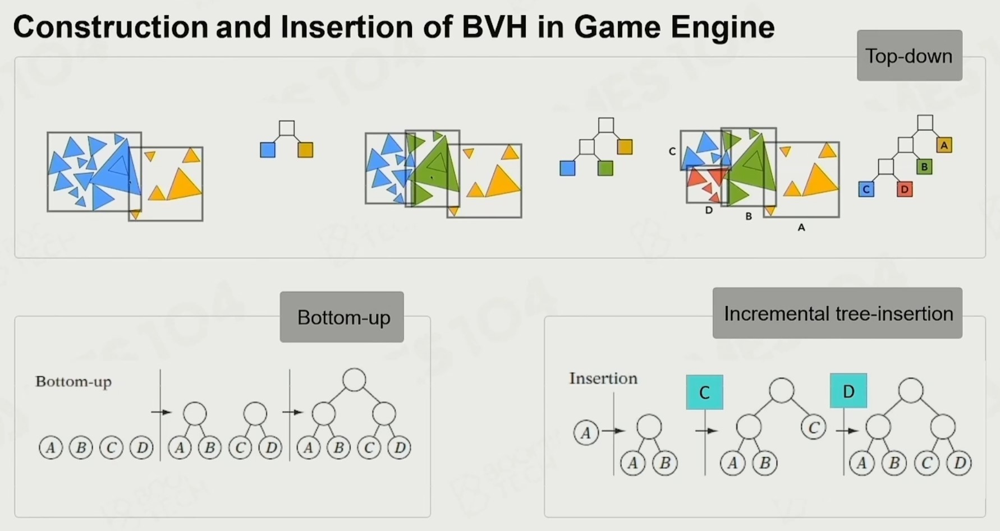
BVH 算法在工业界广泛使用，因为现代游戏场景内动的物体比较多，因此当节点变动后，需要重新构建树状结构，此时要考虑重新构建的成本一定要很低，而 BVH 恰好在此有很多优势，因此 BVH 适用于开阔动态场景。
Early-Z
比当前光栅上渲染的图元深度更深的图元将会被丢弃。
纹理压缩
为了满足随机访问图片像素的需求，游戏引擎中一般使用 Block 的思想，而不是用传统的图片压缩算法。
Block Compression
以 DXTC 格式举例，对于每个划分的小块，取得其中最亮和最暗的像素点，那么我们就可以通过插值处理从而求得二者中间一系列的颜色。

建模
多边形建模
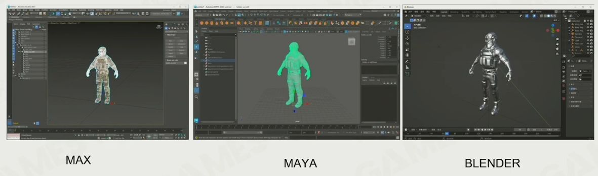
雕刻
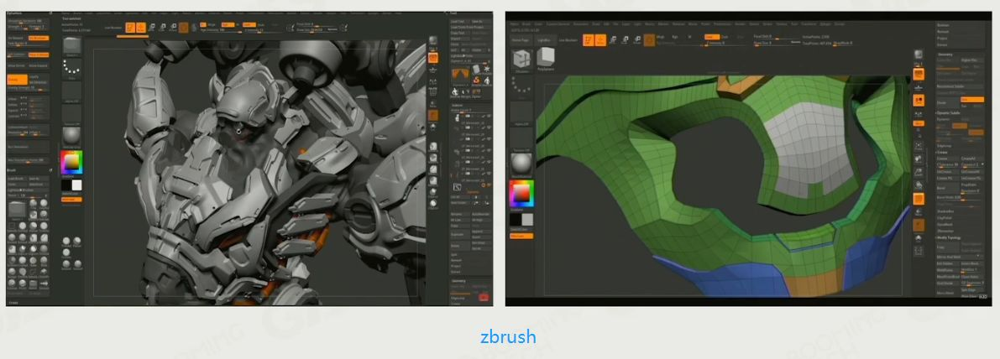
实体扫描
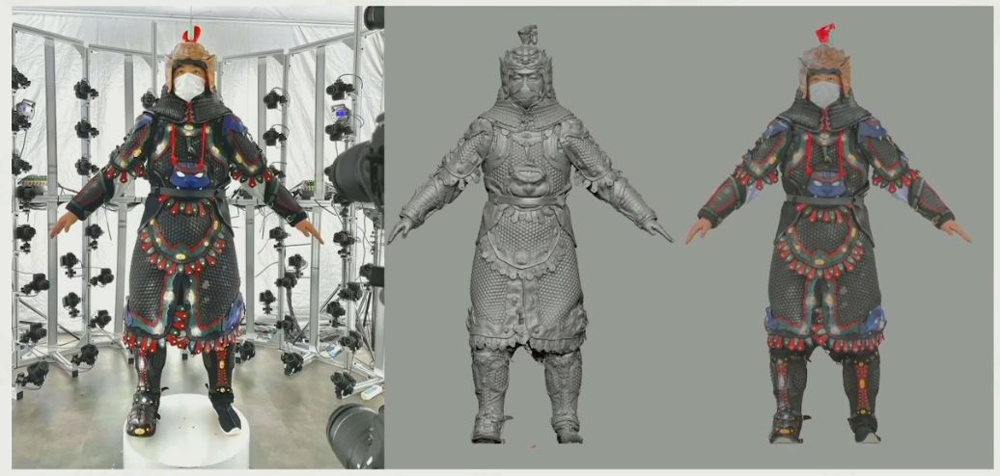
程序化建模
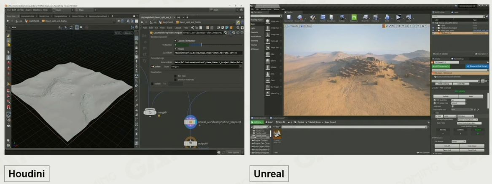
比较
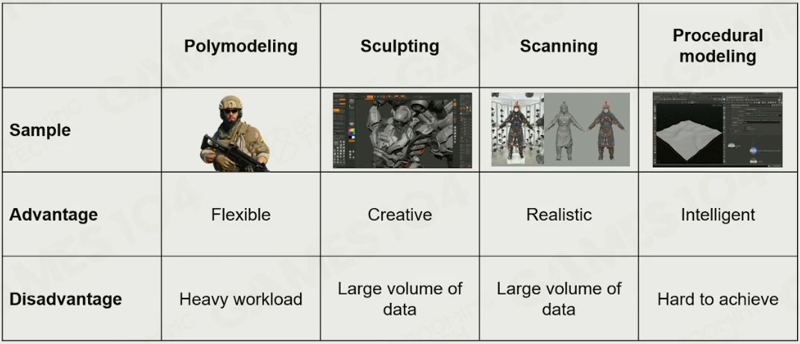
新的模型管线
核心思想是将模型分成多个 Cluster，根据这些 Cluster 与摄像机的远近来展示不同的细节。这要处理的好处在于：
-
现代 GPU 已经可以基于数据，动态生成几何细节，而不是像原先的管线将 mesh 数据上传；
-
当你将每个 cluster 大小确定好后，由于它的计算都是高效一致的，以相同的 Cluster 结构让 GPU 来并行处理时，提高了效率；
-
可以对模型进行 Cluster 剔除。